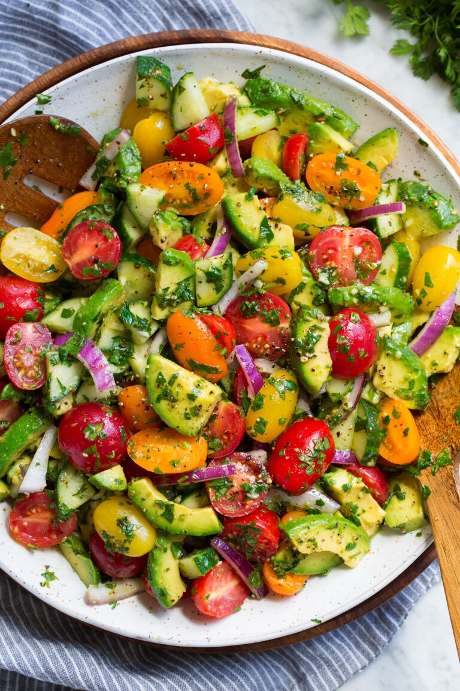

Avocado Salad

Description
You’ll love that it’s easy to throw together, no cooking is required, and it’s an inexpensive side. Especially during summer when all these fruits and veggies are in season.
It’s all about using an abundance of fresh ingredients and a complementary blend of flavors.
Ingredients
- 1 medium (12 oz) English cucumber, cut into quarters through the length then sliced
- 16 oz. grape tomatoes*
- 1/2 small red onion,** sliced into small pieces
- 2 medium avocados (firm but ripe), sliced into bite size pieces
Dressing
- 1 1/2 Tbsp fresh lemon juice
- 1 1/2 Tbsp red wine vinegar
- 3 1/2 Tbsp extra virgin olive oil
- 1 tsp honey
- 1 1/2 tsp minced garlic
- 1/4 cup chopped cilantro
- 1/4 cup chopped parsley
- 1/2 tsp dried oregano
- Salt and freshly ground black pepper
Steps
- For the dressing: In a small mixing bowl whisk together lemon juice, red wine vinegar, extra virgin oil oil, honey, garlic, cilantro, parsley, oregano, and season with salt and pepper to taste.
- In a large bowl gently toss together cucumbers, tomatoes, red onion, and avocado with dressing.
- Serve shortly after preparing.